Gubbachi Learning Community: Bridging the Educational Gap for Migrant Children
1. Introduction
When I visited Gubbachi in Kariyammana Agrahara, near Bellandur, Bengaluru my initial interest was to understand the technology they use and how it helps them improve their daily work. However, as I spent time at the learning centre, my attention gradually shifted from technology to the community and the people behind the organisation.
I became curious about why this learning centre was established, whom it was created for, and how the organisation understood the needs of the community. I wanted to know what challenges these families faced and what motivated the team to build a space where children could continue their education.
One of the most interesting moments for me was observing a classroom where children were learning about computers and Excel. The teacher was explaining basic concepts such as cells, rows, columns, and formatting. What caught my attention was how patiently the teacher explained each concept and helped the children understand it. The children were asking questions whenever they had doubts, and the teacher was patiently guiding them through the learning process.
This made me think about how something that may seem common to people with regular access to computers can be a new learning experience for others. Despite having limited access to such resources, these children were getting an opportunity to explore technology, ask questions, and learn new skills in a supportive environment.
Another thing that stayed with me was the importance of education for children from migrant families. When parents move to another city in search of a livelihood, their children's education can become difficult to continue. I felt that learning communities like Gubbachi play an important role in helping these children continue their education and build a better future.
This visit helped me look beyond the technology I had initially come to understand. It gave me an opportunity to see how education, patient teaching, and community support can come together to create meaningful opportunities for children.
2. About Gubbachi: Empowering One Child, One Family, One Community at a Time
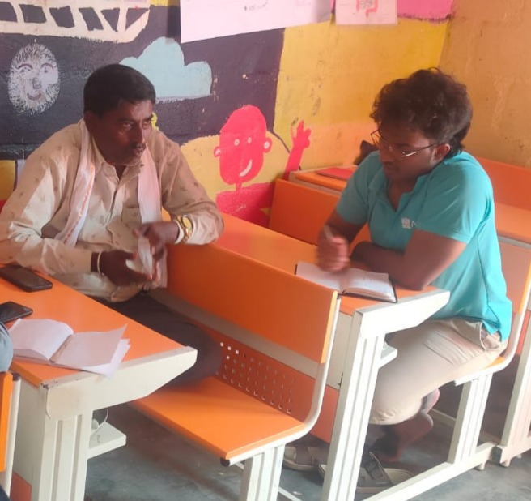
Before visiting Gubbachi, I spoke to one of my seniors who had worked there earlier. Through that conversation, I learned that Gubbachi provides educational support to children from migrant families. I also explored the organisation's website, where I understood that its work focuses on supporting children who face difficulties continuing their education.
Founded in 2015, Gubbachi is a Section 8 non-profit organisation that works towards the educational inclusion of marginalised children, particularly those from migrant families. Along with supporting children's education, the organisation also works with families and communities to help them access relevant benefits, entitlements, and educational opportunities.
One of the challenges I understood is that children come to Gubbachi from different places, bringing different languages and backgrounds. Language can become a barrier when children try to understand what is being taught. Another challenge is the difference in children's ages and learning levels. Children of the same age may not always understand a concept at the same pace, and children of different ages may have different levels of understanding. This made me think that age alone does not determine a child's ability to learn. Understanding each child's learning needs and teaching them accordingly is equally important.
While exploring Gubbachi's work, I found that its approach goes beyond simply providing education. It focuses on helping children continue their education, supporting them according to their learning needs, involving parents and families, and connecting children with schools and other educational opportunities. The organisation also uses approaches such as learning-recovery programmes and alternative education pathways to help children overcome learning gaps and continue their educational journey.
Another thought that came to my mind was what might happen if children did not receive this kind of support. Children often learn about life by observing their parents and the surroundings in which they grow up. If their families have limited opportunities and the children do not receive proper educational guidance, they may find it difficult to imagine a different future for themselves. Education can help them discover new possibilities, develop their abilities, and understand that their future does not have to be limited by their current circumstances.
For me, Gubbachi's work highlights an important message: every child deserves access to education, regardless of their background. Supporting a child also means understanding their family and community, because these play an important role in the child's development. Migrant children need not only educational opportunities but also understanding, guidance, and the support required to continue learning and build a better future.
3. Programs Run by Gubbachi: the Core Programs
During my understanding of Gubbachi's work, I learned that the organisation runs six core programmes. Each programme focuses on children at different age groups and learning stages. What I found interesting is that Gubbachi does not follow the same approach for every child. Instead, it tries to understand their age, learning level, and circumstances and provides support accordingly.
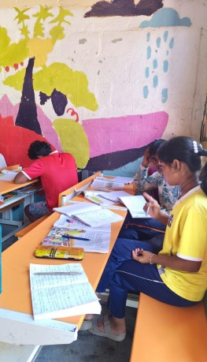
1. Gubbachi Buds (Ages 3–6)
Gubbachi Buds focuses on Early Childhood Care and Education. It helps young children develop basic learning skills and prepares them for preschool.
One important aspect of this programme is sibling support. In some families, older children may have to stay at home to take care of their younger brothers or sisters. This can affect their own education. By providing care and learning support to younger children, the programme also helps older siblings get the opportunity to attend their classes regularly.
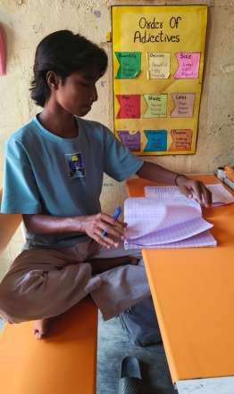
2. Gubbachi Connect (Ages 6–9, up to 16 for Learning Recovery)
Gubbachi Connect focuses on children who have never enrolled in school or have discontinued their education. It works as a bridge programme that helps children develop foundational literacy and numeracy skills.
The programme follows a fast-track learning approach to help children cover their learning gaps and prepare them to return to formal schooling. Once they are ready, they are supported in joining government schools and continuing their education. Multilingual teachers also help children overcome language barriers during this process.
3. Gubbachi ProActive (Ages 10–17)
Gubbachi ProActive supports older children and adolescents who have dropped out of school. At this stage, children may have significant gaps in their learning, so they need additional guidance and support.
The programme helps them strengthen their understanding of different subjects and prepares them to complete their Class 10 education through the National Institute of Open Schooling (NIOS). I understood that this programme provides another opportunity for older children who could not continue their regular schooling to complete their education.
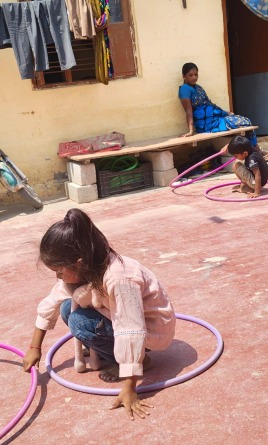
4. Gubbachi Transform (Grades 1–3)
Gubbachi Transform works within government primary schools and focuses on improving the learning experience of children in Grades 1 to 3.
It uses the Nali-Kali learning approach, which follows a multi-grade and multi-level method of teaching. This allows children with different learning abilities and levels to learn together in the same classroom. Instead of expecting every child to learn at the same speed, the approach gives them opportunities to progress according to their understanding.
5. School Learning Program / School Adoption (Grades 4–8)
This programme continues the learning support for children after they complete the Nali-Kali stage. It focuses on students in Grades 4 to 8 in government schools.
Under this programme, trained subject teachers work in government school classrooms to support students in different subjects. The main focus is to improve the quality of teaching, strengthen children's understanding, and encourage them to continue their education.
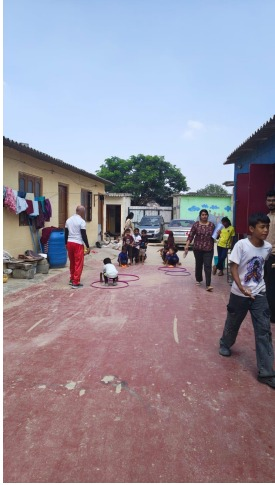
6. Gubbachi Enable (Community Programme)
Gubbachi Enable focuses on challenges that children and families face outside the classroom. I found this programme particularly interesting because it shows that supporting a child's education also requires understanding the family's circumstances.
The programme works with migrant worker families and urban communities by supporting areas such as primary healthcare, financial literacy, and skill development for women and young people. It also helps families access important government documents and services through the Janadhikara project.
My Understanding
After learning about these six programmes, I understood that Gubbachi's work is not limited to teaching children inside a classroom. It tries to support children at different stages of their educational journey, whether they are preparing for preschool, returning to school after dropping out, or continuing their education in government schools.
Another important thing I understood is that a child's education is connected to the family's situation and the opportunities available in the surrounding community. Through these six programmes, Gubbachi tries to address both educational needs and the challenges that affect children's ability to learn and continue schooling.
4. Observations in the Classroom
As I mentioned in the introduction, my initial interest during the visit was to understand the technology used at Gubbachi. However, when I entered the classroom, I became more interested in understanding how children were learning and how teachers were supporting them.
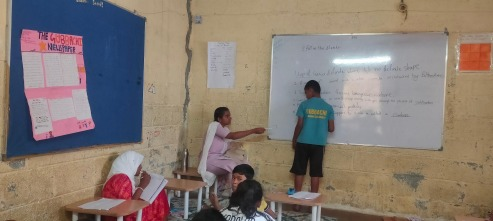
One of the first things I noticed was the friendly relationship between teachers and students. The teachers did not simply stand in front of the classroom and explain lessons. They interacted with the children, listened to their questions, and patiently clarified their doubts. I felt that this kind of environment made children more comfortable participating in the classroom and expressing what they did not understand.
One particular experience that caught my attention was observing a computer class. Interestingly, the children were not using computers or laptops during that session. Instead, they were learning the basic concepts of computers and Excel theoretically.
The teacher explained topics such as rows, columns, cells, and formatting. After explaining the concepts, the teacher gave the students test papers to check their understanding. The teacher then went through their mistakes and explained where they had gone wrong.
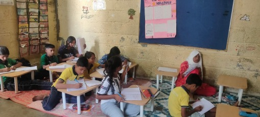
I found this approach interesting because the teacher was not simply checking whether students had written the correct answers. The teacher was also helping them understand their mistakes. It made me think about how important it is to give children enough time to understand a concept rather than expecting everyone to learn at the same pace.
I also learned about some of the other classroom activities. The English teacher, Aisha, was helping students prepare for an English drama planned for the following Friday. I also learned that Ashwini taught Environmental Studies (EVS).
The learning centre generally follows a timetable with around five classes a day, although the schedule varies. On certain days, the last two periods are dedicated to extracurricular activities such as dance, painting, drama, and sports, including football, kho-kho, and basketball.
I also had an opportunity to interact with a few students and understand a little about their family backgrounds.
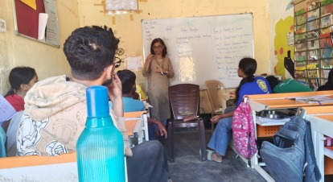
Most of the students I spoke with came from North-Eastern India. When I asked about their parents' occupations, I learned that some worked as household cooks, while others worked as masons or daily-wage labourers. These conversations helped me understand that children at the learning centre come from different family backgrounds and circumstances.
Apart from classroom activities, I also observed the students during sports and lunchtime. Something that particularly impressed me was their awareness of cleanliness and responsibility. At one point, I wanted to dispose of some vegetable waste but could not find a dustbin nearby. As I was about to leave it in another area, a girl called me and explained that they maintained cleanliness in the learning centre. I felt good about this small interaction because it showed me that children were learning habits of responsibility along with their academic subjects.
Looking back at these observations, I realised that a classroom is not just a place where children learn different subjects. It is also a space where they develop confidence, ask questions, interact with others, and learn to take responsibility. What stood out to me most was the friendly teaching approach. The teachers spent time with the children, understood their doubts, and guided them patiently.
This experience helped me understand something important: education is not only about what is taught, but also about how it is taught and how comfortable children feel while learning. This was one of the most meaningful things I observed during my visit to Gubbachi.
5. About the Co-Founder
During our visit to Gubbachi, Liyakhat, a teacher at the learning centre, was our field mentor. After we reached the location, he guided us to meet one of the organisation's co-founders, Preethy Rao.
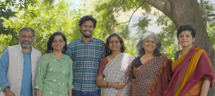
Gubbachi has six co-founders: Joseph Deyone Jacobe, Preethy Rao, Manimakalai Raja, Rizwan Ahmed, Nomita Sikand, and Somya Nand. Preethy Rao holds an MA in Education from Azim Premji University and currently serves as the Program Lead of the Bridge Program at the Community Learning Centre (CLC) in Bellandur.
My first impression of Preethy was that she was a patient and thoughtful teacher. She listened carefully to what we said and tried to understand our perspectives.
What I found particularly interesting was how she encouraged us to observe the learning environment and think about how children learn. She seemed attentive to the different ways students understand concepts and to how teaching can be adapted to their needs.
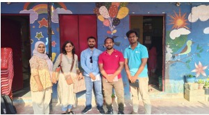
We did not have a long conversation about the learning community because the school was busy at the time. However, after our interaction, she assigned us to different classrooms so that we could observe the activities and interact with teachers and students. Liyakhat then guided me to one of the classrooms.
I felt that this was an opportunity to look beyond the classroom itself and understand the children, their learning needs, and the ways teachers support them. Rather than simply telling us about Gubbachi, the experience encouraged us to observe the work happening around us and learn from it.
My interaction with Preethy left me with the impression of a teacher who tries to understand students before deciding how to teach them. For me, this highlighted an important aspect of teaching: understanding a child's way of thinking and learning is just as important as explaining a concept. This perspective also shaped the way I approached my classroom observations during the visit.
6. Conversations with Liyakhat and Shiva

After lunch, we had an opportunity to interact with Liyakhat and Shiva, who were both teachers at the Gubbachi learning community. During this conversation, we learned more about how the organisation functions, the people it works with, and the different programmes it runs.
One of the things we discussed was the overall structure of Gubbachi. They explained that the organisation works through six major programmes, each designed to support children at different stages of their education. I found this interesting because Gubbachi does not follow a single approach for every child. Instead, its programmes focus on different age groups, learning requirements, and circumstances.
They also shared that around 127 children were part of the community learning centre, supported by approximately 10–15 staff members.
Most of the children come from migrant families, particularly families who have moved from North-Eastern parts of India in search of employment and better livelihood opportunities.
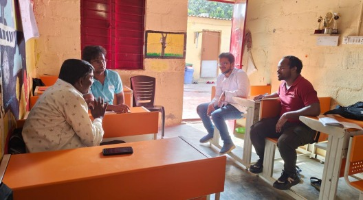
Through its educational programmes, Gubbachi helps these children continue their education and provides support according to their learning needs.
Another important thing we discussed was the mid-day meal facility provided to the children. The meals are supplied through the Akshaya Patra Foundation, which works towards addressing classroom hunger by providing meals to children through the PM POSHAN (Mid-Day Meal) programme. I felt that this support is also important because access to food and proper nutrition plays a role in helping children attend school and participate in their learning activities.
What I understood from this conversation was that Gubbachi's work goes beyond helping children attend classes. Its programmes also consider the difficulties children face outside the classroom. These may include interruptions in education, differences in learning levels, and other challenges.
7. Teachers' Meeting Discussion
Towards the end of the day, at around 3:00 p.m., I had an opportunity to understand another important part of Gubbachi's work through a teachers' meeting. The meeting focused on students' academic performance, the difficulties they were facing in their learning, and the possible ways teachers could support them better.
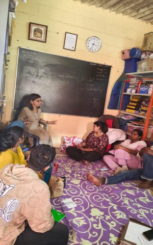
During the discussion, teachers reviewed the students' academic performance data. One of the observations shared was that approximately 50–60% of the students were scoring below 50% of the marks. This indicated that several students were experiencing difficulties in their academic progress.
The discussion also brought attention to different challenges in the teaching and learning process. These included difficulties in explaining concepts effectively, differences in teaching methods and instructional levels, and understanding the attitudes and individual learning needs of students. The teachers also discussed the importance of students putting consistent effort into their academic preparation.
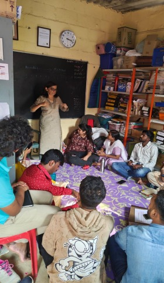
What I found particularly interesting was that the discussion did not stop with identifying the problems. The teachers also explored possible ways to improve the situation. Some of the suggestions included grouping students according to their learning levels, introducing peer learning and tutoring, improving the structure of question papers, and providing regular practice questions to help students strengthen their understanding of concepts.
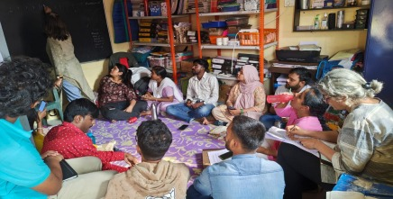
The performance data also showed that different student groups had different learning outcomes. Group A students were performing consistently well, while students in Groups B1, B2, and the NIOS group were facing continued academic difficulties. Group C required further assessment and regrouping so that teachers could better understand and address their learning needs.
This meeting gave me another perspective on how Gubbachi approaches education. During my classroom observations, I had seen teachers patiently explaining concepts and helping students clear their doubts. Through this meeting, I understood that their work also involves reviewing students' progress, identifying learning gaps, discussing challenges, and finding ways to improve their teaching methods.
For me, one important takeaway was that supporting children in education requires continuous observation and effort. Every child may not learn at the same pace, and understanding their difficulties is an important step towards helping them improve. I also realised how important it is for teachers to work together, share their observations, and make decisions based on students' actual learning needs.
8. Conclusion
My visit to Gubbachi was a meaningful learning experience that gave me an opportunity to understand education from a different perspective. I initially visited the organisation to learn about the technology they use and how it supports their work. However, as I spent time there, I realised that there was much more to understand beyond the technology.
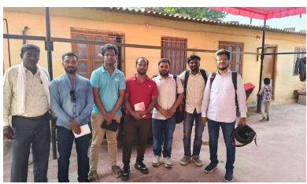
Through my interactions with the teachers, students, and the co-founder, I got a better understanding of the challenges faced by children from migrant families and the efforts made by Gubbachi to support their education. Learning about its six core programmes helped me understand how the organisation supports children at different stages of their educational journey, from early childhood education to alternative pathways for completing secondary education. I also understood that supporting children requires looking beyond the classroom and considering the circumstances of their families and communities.
The classroom observations taught me the importance of creating a friendly learning environment where children feel comfortable asking questions, making mistakes, and learning at their own pace. The conversation with Liyakhat and Shiva helped me understand the organisational structure and the different kinds of support provided to children. Similarly, observing the teachers' meeting gave me an insight into how teachers identify learning gaps, discuss challenges, and work together to improve students' academic performance.
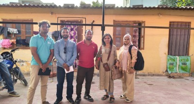
One thing that stayed with me throughout the visit was that every child has a different learning journey. A child's age does not always determine their learning ability, and not every child understands a concept at the same pace. What matters is how teachers recognise these differences and provide the right guidance and support.
Overall, this visit changed the way I looked at the role of an educational organisation. I understood that education is not just about teaching subjects or completing a syllabus. It is also about understanding children, recognising their circumstances, building confidence, and creating opportunities for them to continue learning.
I came to Gubbachi with an interest in technology, but I left with a much broader understanding of education, teaching, and community support. More importantly, this experience reminded me that sometimes, to understand an organisation's work, we need to look beyond the systems and tools it uses and pay attention to the people and the purpose behind them.